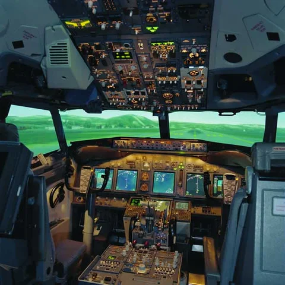
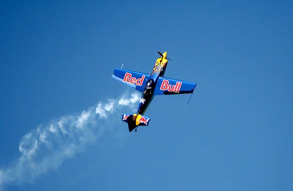
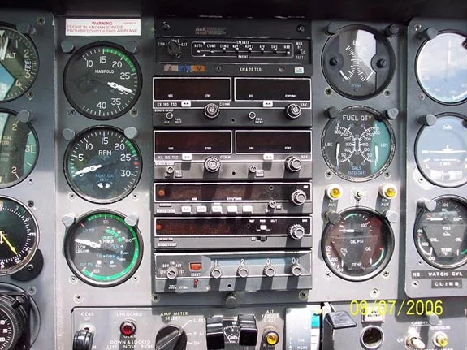
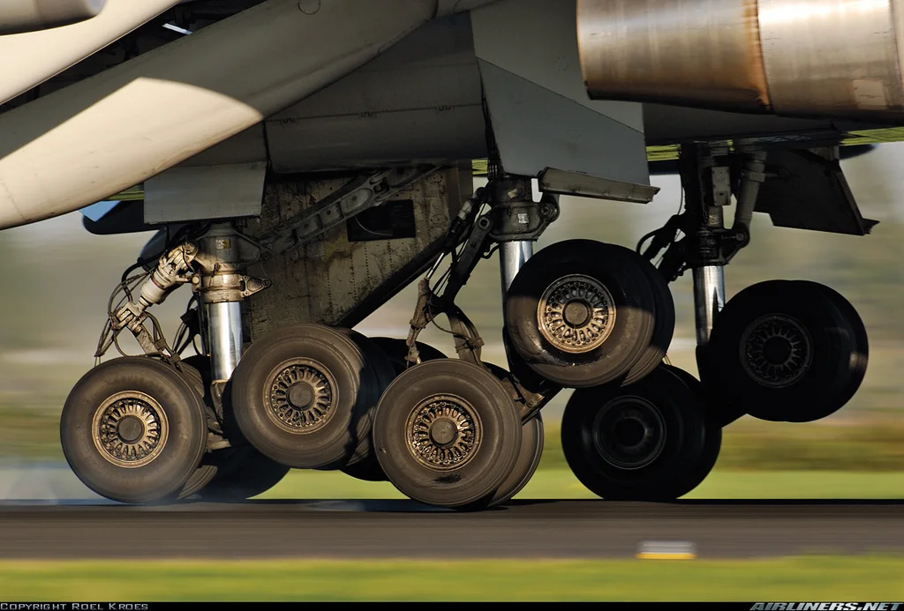

A pilot usually sits in the seat on the left, as there will probably be two seats
up
front. Sit down, being careful not to touch any controls. There will be plenty of confusing stuff on the
dashboard - just ignore it for now. The first thing to do is level off the aircraft.
Examine the artificial horizon (Shown in the image below - it's the blue above the brown, with a
little pair
of wings in the middle). The blue up top represents the sky, and the brown below represents the
ground.
Gently take the yoke (The stick controlling the aircraft), and pull up or down accordingly to
make the
little wings in the middle, between the blue and the brown.
If it seems that this is not working, look outside, and visually level off.
Levelling off means that you will fly straight, and not hit the ground or stall and start dropping
fast.
Step 1: Take the Seat and Level Off

ONLY FOLLOW THIS STEP IF YOUR SITUATION MATCHES THE FOLLOWING:
If you've levelled out the plane, but you're falling fast, and you're hearing this strange insistant
buzzing
or wailing sound, you've stalled. This is very, very bad. It means that the plane is no longer
flying,
but
falling.
The thing to do is pitch down and go into a nosedive. As you near the ground, slowly pull up, so
you don't
crash. If you continue to fall, then buckle your seat belt, cause it's gonna get
bumpy. Level
out as you
approach the ground, and try to belly land (Land without the gear down).
Step 2: I've Made the Little Wings Go in the Middle, But the Plane's Falling Like a Rock

Okay, so the plane is level. Now you can start yelling for help.
There is something called a radio stack in every aircraft, which allows radio communication. Grab
the
microphone, and look for a button labelled "PTT", which stands for "Push To Talk". Grab
the pilot's headset
as well, and put it on. Push the button, and yell "Mayday! Mayday!" into it. Then, still
holding
down the
button, describe your situation
Step 3: Okay, It's Level. Now What?
I'm on a 747 bound for Germany, and the pilot's just died!Release the button, and wait for a reply. After 10 seconds, try again. If there is still no responce, change the frequency to 121.5 as you would with a normal radio. Then repeat what you did before. 121.5 is the emergency frequency. If you get a reply, explain your situation again, and you will recieve help. Follow instructions exactly. If you can't set the frequency, and/or you still hear no reply, look at the bottom screen on the stack. This is the transponder. Set it to 7700. This will alert ATC (Air Traffic Control) to your emergency.

You've followed their instructions, and now you've got to land. This is the
tricky
part.
The first thing to do is line the plane up with the runway. Make sure you are headed right for it, and
flying parallel, so you won't start veering off. Point the nose slightly down, and start to decend.
Make
sure the wheels are down! ATC should explain which lever does this, as it varies from aircraft
to aircraft.
More from Phil:
Step 4: Okay, I've Done What They Said, Now What?
From Phil B:Lining up with the runway can be deceiving. It is easy to aim for the end of the runway and not notice the plane is not really lined up. It is a lot like looking down the length of a board to see if it is straight or warped. Looking at the whole length of the runway at the same time helps to know if the plane is too far right or left of the runway so there are no surprises at the last few seconds. Aim for the large numbers painted at the end of the runway. As you approach the runway, gently pull up, so the main wheels touch down first. When you hit the ground, slowly put the nose back down, and apply the brakes (Which usually come one automatically - if not, ask ATC which button to press or lever to pull).There is also the matter of slowing the plane for landing speed, but not so much that it stalls. Slowing is a combination of pointing the nose up slightly while manipulating the throttles to keep speed up, but also not too much extra throttle to keep the plane from climbing. Adjust the throttle so the plane descends about 500 feet per minute. Add a notch or two of flaps so the plane has enough lift at lower speeds without stalling and dropping as if it were a rock.
Pulling up just before the wheels touch down is a fingertip sensitive operation. If you pull up too much the plane shoots back up into the air. You pull up just enough to hold the plane off of the runway while it settles down gently onto the runway. (When planes bounce back up into the air a few feet on landing, it means the airspeed was too great, yet.) All of this also is based on the infrequent circumstance that there might be no crosswind that will cause the plane to drift off to one side of the runway during the approach. In the event of any crosswind you need to know to use a combination of dipping a wing slightly into the wind to make the plane pull toward the wind while also adding a little rudder in the opposite direction to keep the plane from going too far toward the wind and keeping it headed toward the runway.Keep the plane going straight, and slowly come to a stop.